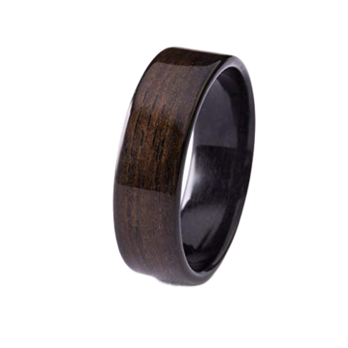
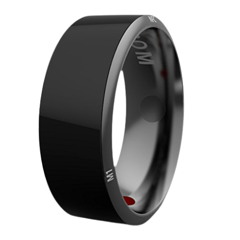
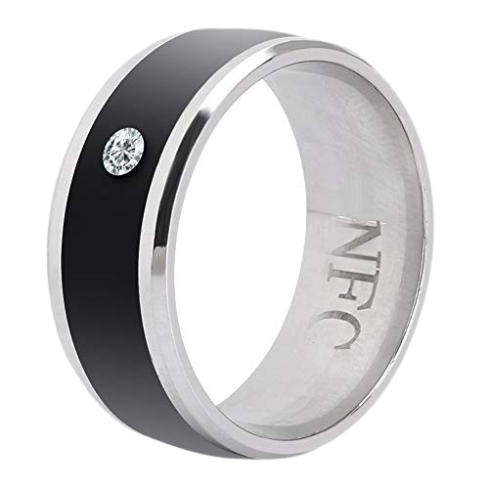

Que son los Smart Rings.
Los Smart Rings son una de las últimas novedades que ha irrumpido en el sector de los dispositivos wearables. Esta tecnología, a pesar de no ser aún tan popular como otras como pueden ser los Smartwatches; presenta una sería de ventajas que pueden impulsar su uso en el futuro.
Estos Smart Rings son muy parecidos a los anillos de toda la vida en cuanto a apariencia. Sin embargo, es su interior lo que diferencia a estos dispositivos; ya que en él dichos aparatos llevan integrados Bluetooth, un chip y sensores lo que les permite llevar a cabo tareas electrónicas.
Aunque la aparición de estos dispositivos se pueda remontar a casi una década atrás, su popularidad a empezado a aumentar en la actualidad. Y es que uno de los mayores retos a la hora de fabricar estos aparatos electrónicos es la dificultad para integrar los sistemas anteriormente mencionados en el interior de algo de dimensiones tan reducidas. Es por ello que en los últinos años, con la entrada al sector de multinacionales del tamaño de Apple o Microsoft este ha presenciado un gran impulso.
Utilidades de los Smart Rings.
Actualmente la mayoría de las aplicaciones de estos anillos se basan en acortar o automatizar determinados procesos. Para ello se hace uso de la tecnología NFC (Near Field Communication), la cual nos permite llevar a cabo transacciones, intercambiar contenido digital o conectar dispositivos electrónicos de forma segura simplemente acercando los aparatos que vayan a realizar dichas acciones.
Algunos ejemplos de las funciones para las que se están usando los Smart Rings son para los pagos con contactless, el seguimiento de las actividades físicas o la salud y la interaccion con otros devices como pueden ser coches o casas inteligentes. No obstante, con la entrada en el sector de multinacionales no sería de extrañar que estos dispositivos sean cada vez más potentes, lo que a su vez abriría el horizante de oportunidades en cuanto a las posibles aplicaciones de estos aparatos.
Modelos de Smart Rings.
| Imagen | Marca | Modelo | Permite hacer pagos | Monitoreo de actividad | Resistente al agua |
|---|---|---|---|---|---|
|  | COLMO | COLMO Tesla Accesories Llavero | No | No | Si |
|  | Timer | Jakcom R3 Anillo multifuncional inteligente NFC | Si | No | Si |
|  | Sleepon | Sleepon pulsixómetro inalámbrico | No | Si | Si |